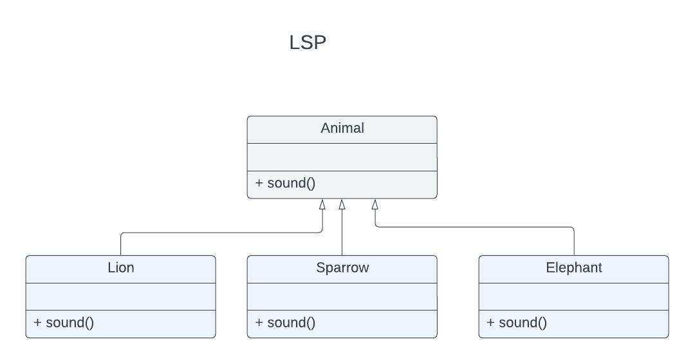

S.O.L.I.D. Principles
SOLID Principle is the acronym of below design principles designed by Robert C Martin:
- Single Responsibility Principle(SRP)
- Open Closed Principle(OCP)
- The Liskov Substitution Principle(LSP)
- Interface Segregation Principle(ISP)
- Dependency Inversion Principle(DIP)
SOLID principles define how components and functions should be arranged and how they should be interconnected. Goal of these principles is to design the applicaitons such that
- Tolerant to change
- Easy to understand
- Easy to Re-use
Single Responsibility Principle(SRP):
A module should have one, and only one, reason to change.
Out of all the SOLID principles, SRP is the easiest one. A module should be responsible to one, and only one stakeholder. Stakeholders drive the changes to the module. If multiple stakeholders are responsible for a module then the reason for change can come from multiple stakeholders.
Disadvantages of not following/adhering to SRP are:
- Code Duplication: If we don't identify the business case which has to be used in multiple places and create a seperate module, then very likely this business logic will be duplicated in written multiple places over the period of time.
- Frequent Merges and inadvertant impacts:If a business case was used by multiple stake holders, then it will cause frequent merge conflicts and inadvertant issues due to other persons change.
So a module has to be onwned only by one stakeholder. Any changes to the module has to be brought only by that stake holder.
Open Closed Principle(OCP):
A software should be open for extension but closed for modification.
In other words, the behaviour of the software should be extendble, without having to modify the artifact. Software systems should allow changes to behaviour of the system by adding new code, rather than chaging the exisiting code.
This principle emphasis the necessity to create an architecture with appropriate scalability options. A software is never complete. It always goes through changes and new business functionality gets added as time passes. So software has to have the capabilty to scale without affecting the exisiting functionality.
Guideliess:
- Parition the system into components
- Arrange the components into dependency hierarchy
- Protect higher level components from lower-level components by using interface
Dependencies should be created between modules through Interfaces so that its easy to replace.
The Liskov Substitution Principle(LSP):
Objects of a SuperClass shall be replaceable with objects of its subclass without breaking the application
This requires the objects of your superclass to behave in the same way as the objects of your superclass. A overridden method of subclass needs to accept the same input paramter values as the method of superclass. Same rule applies to return value of the method. Earlier LSP was seens as a way to guide inheretence but later it was mporphed into a broader software principle that pretains to interface and implementaion.
Guidelines:
To build a software from interchangeable parts, those parts must adhere to a contract that allows those parts to be substituted one for another.

Interface Segregation Principle(ISP):
Software design should avoid depending on things that they don't use
Client should not be forced to depend upon interfaces that they don't use. Design should not create fat interfaces. Better to have many smaller interfaces rather than very few larger interfaces. Depending on something that carries the baggage that we don't use can cause troubles that we didn't expect.
ISP favours:
- Composition over inheretence
- Decoupling over inheretence


Dependency Inversion Principle(DIP):
Most flexible systems are those in which source code dependencies refer only to abstractions, not to concretions
In a statically typed programming language like JAVA/PERL, this means that use/import/include statements should refer only source modules containing interfaces, abstract classes or some kind of abstract declarations. They should never directly import concretions of other classes(Concretions are implementations).
Code that implements high-level policy should not depend on code that implements low-level details. Rather, details should depend on policies.
Guidelines:
When it comes to DIP, its not possible to enforce 100%. We can ignore DIP for static components like string and date utilities. we need to enforce DIP only for more volatile components.